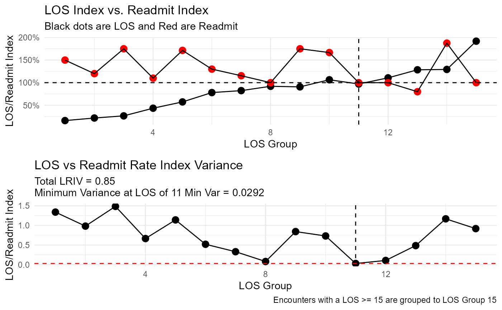
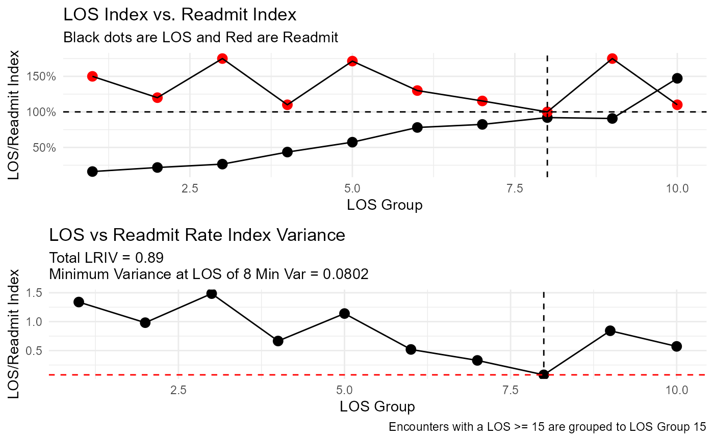

Plot the index of the length of stay and readmit rate against each other along with the variance
Arguments
- .data
The data supplied from
los_ra_index_summary_tbl()
Details
Expects a tibble
Expects a Length of Stay and Readmit column, must be numeric
Uses
cowplotto stack plots
See also
Other Plotting Functions:
diverging_bar_plt(),
diverging_lollipop_plt(),
gartner_magic_chart_plt(),
ts_alos_plt(),
ts_median_excess_plt(),
ts_plt(),
ts_readmit_rate_plt()
Examples
suppressPackageStartupMessages(library(dplyr))
data_tbl <- tibble(
"alos" = runif(186, 1, 20)
, "elos" = runif(186, 1, 17)
, "readmit_rate" = runif(186, 0, .25)
, "readmit_rate_bench" = runif(186, 0, .2)
)
los_ra_index_summary_tbl(
.data = data_tbl
, .max_los = 15
, .alos_col = alos
, .elos_col = elos
, .readmit_rate = readmit_rate
, .readmit_bench = readmit_rate_bench
) %>%
los_ra_index_plt()

los_ra_index_summary_tbl(
.data = data_tbl
, .max_los = 10
, .alos_col = alos
, .elos_col = elos
, .readmit_rate = readmit_rate
, .readmit_bench = readmit_rate_bench
) %>%
los_ra_index_plt()
